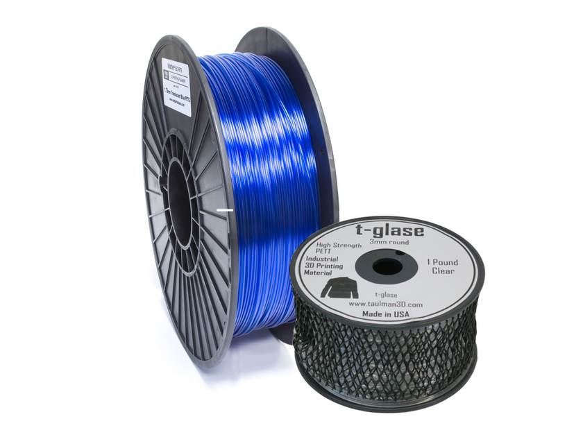

Familia PET
PET
En escritorio se habla mucho más de PETG que de PET, pero entender PET ayuda a situar la familia completa. PET suele aparecer en filamentos específicos, industriales o formulaciones menos comunes para usuario doméstico.

Resumen rápido
Dificultad
Media a alta según formulación. No es un “sustituto fácil” de PETG.
Uso típico
Aplicaciones concretas donde se busca una formulación más cercana al PET base.
Punto fuerte
Puede ofrecer buena resistencia química y propiedades equilibradas.
Punto débil
Menor presencia en escritorio, menos perfiles comunitarios y comportamiento más variable entre marcas.
Qué es
PET es el polímero base del que derivan formulaciones como PETG. En impresión 3D de consumo, el problema no es solo “si imprime”, sino si merece la pena frente a PETG, que suele ser más fácil y más extendido.
Cuando un fabricante vende PET sin modificar, conviene leer su ficha técnica con cuidado, porque el comportamiento real puede alejarse bastante de un PETG común.
Tipos y variantes de PET
La familia PET es amplia. En escritorio se ve más PETG, pero PET, PET-CF y blends especiales también existen.
PET estándar
Más cercano al polímero base. Puede ser más exigente y menos documentado que PETG en impresoras domésticas.
PETG
Variante modificada con glicol. Es la opción común porque imprime más fácil, es menos quebradiza y tiene mucha comunidad detrás.
PET-CF
Refuerzo con fibra de carbono para mejorar rigidez y acabado. Requiere boquilla endurecida y revisar temperatura según fabricante.
PET transparente
Formulaciones pensadas para transmitir luz. La transparencia real depende de temperatura, flujo, capas gruesas, orientación y postprocesado.
Temperaturas orientativas
| Parámetro | Rango habitual | Comentario |
|---|---|---|
| Boquilla | 240-265 °C | Depende mucho de la formulación concreta. |
| Cama | 70-90 °C | Mejor con superficie estable y buena adhesión controlada. |
| Ventilación | Baja a media | Demasiada ventilación puede penalizar capas. |
| Cámara | Opcional | Útil en piezas grandes o perfiles exigentes. |
Compatibilidad y hardware
- No todos los perfiles de PETG sirven directamente para PET.
- Conviene verificar límite térmico real del hotend y de la superficie de impresión.
- En impresoras abiertas puede funcionar, pero pide más observación y menos confianza ciega en perfiles genéricos.
Perfil base recomendado
Trata PET como material propio, no como PETG con otro nombre. Empieza con el rango del fabricante y ajusta por síntomas.
| Ajuste | Punto de partida | Notas |
|---|---|---|
| Velocidad | 40-100 mm/s | Depende mucho de la fluidez del producto. |
| Retracción | Moderada | Demasiada retracción puede generar atascos o marcas. |
| Ventilador | 20-50% | Equilibrio entre detalle y unión entre capas. |
| Secado | Recomendable | Mejora acabado y reduce burbujeo. |
Humedad y almacenamiento
Como otros miembros de esta familia, PET puede degradar mucho el acabado cuando gana humedad. Si ves burbujeo, variación de línea o stringing extraño, el secado es un paso básico antes de seguir afinando.
Ventajas
- Buena resistencia química y equilibrio general en formulaciones bien hechas.
- Interés técnico para quien quiere salir del circuito estándar PLA-PETG-ABS.
- Puede ser una base válida para piezas funcionales concretas.
Límites
- Poca estandarización doméstica.
- Menos documentación y menos comunidad usando exactamente el mismo producto.
- En la práctica PETG suele ser una compra más sensata para la mayoría.
Usos recomendados
PET tiene sentido cuando el fabricante aporta una propuesta clara y propiedades concretas que justifican salir de PETG. Si solo buscas una pieza funcional general, PETG casi siempre será la decisión más práctica.
Problemas típicos
El mayor problema no suele ser uno solo, sino la falta de perfiles maduros: adhesión, stringing, flujo y aspecto final pueden requerir más pruebas que con materiales más populares.
Diagnóstico rápido
- Si hay hilos finos, revisa humedad antes de subir mucho la retracción.
- Si queda mate o quebradizo, prueba temperatura y flujo dentro del rango del fabricante.
- Si se pega demasiado a la cama, usa una capa separadora adecuada para no dañar la superficie.
- Si no ves ventaja frente a PETG, probablemente PETG sea la opción correcta para esa pieza.
PET en una Bambu A1
Puede ser viable si el fabricante mantiene el material dentro de un rango razonable para hotend abierto, pero no es la mejor ruta para aprender. Solo compensa si sabes por qué eliges PET y no PETG.
Cuándo elegirlo y cuándo no
Elige PET si buscas una formulación específica y ya tienes criterio para evaluar materiales menos comunes.
No lo elijas como filamento de entrada ni como compra “a ciegas” si PETG ya cubre el objetivo.
Utilidad de la página